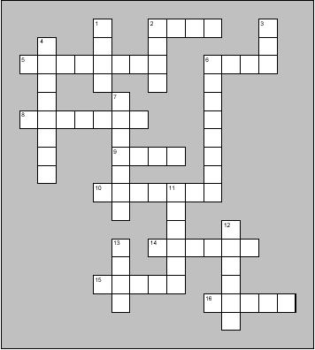
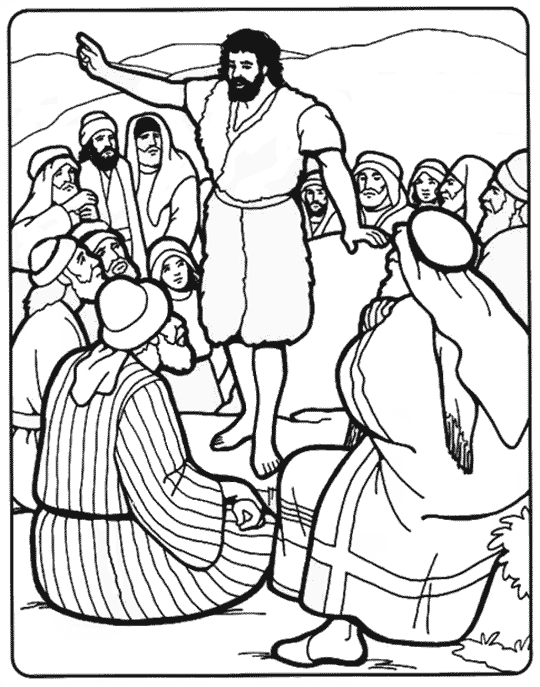

Read the lessons at the Vanderbilt Library website: http://divinity.lib.vanderbilt.edu/lectionary/cEpiphany/cBaptism.htm
Read
the lessons at the Vanderbilt Library website:
http://divinity.lib.vanderbilt.edu/lectionary/cEpiphany/cBaptism.htm
Elementary School Pew-work
|
 |
Luke 3:15-17, 21-22 (CEV) 4 down) Everyone became excited and _______, 8 across) Could John be the _______? 13 down) ____ said, "I am just baptizing with water. 5 across) But someone more ________ is going to come, 7 down) and I am not good enough even to untie his _______. 11 down) He will baptize you with the Holy ______ and with fire. 2 across) His threshing fork is in his ____, 15 across) and he is ready to separate the _____ from the husks. 6 across) He will store the wheat in his ____ 1 down) and burn the husks with a ____ that never goes out." 6 down) While everyone else was being ________, 16 across) _____ himself was baptized. 14 across) Then as he ______, the sky opened up, 2 down) and the ____ Spirit came down upon him 9 across) in the form of a ____. 12 down) A voice from ______ said, 3 down) You are my own dear ___, 10 across) and I am _______ with you." |
W H O L Y W A T E R T
|
(Luke 3:16) John answered all of them by saying, "I baptize you with water; but one who is more powerful than I is coming; I am not worthy to untie the thong of his sandals. He will baptize you with the Holy Spirit and fire. (NRSV) |
POWERFUL ANSWERED SANDALS BAPTIZE WORTHY SPIRIT SAYING COMING WATER UNTIE THONG WITH WILL THEM THAN NRSV MORE LUKE JOHN HOLY FIRE YOU WHO ONE NOT HIS BUT ALL TO OF BY AM |
from www.geocities.com/lectionarypuzzles/ free to distribute for free with this notice. Words are in a straight line left to right or top to bottom |
||
